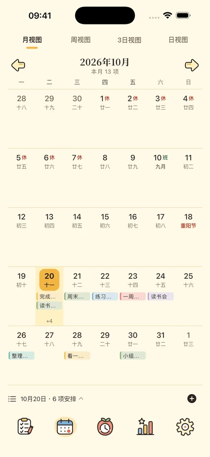
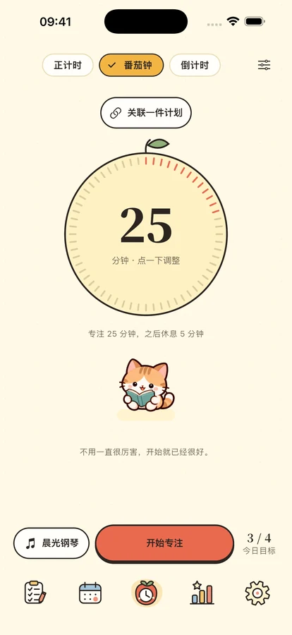
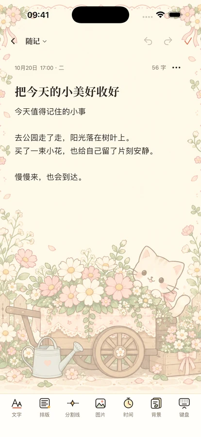

陪你把重要的事，
慢慢做完。
把纷乱的待办放进四象限，给眼前的一件事留一点专注。日历、备忘录与倒数日，也都在团团的小小日常里。
为 iPhone 与 iPad 设计 · 正在准备上架

今天，也一起慢慢来。
从一件小事开始
安排事情，留出时间，也给自己一点陪伴。

把事情，放到合适的位置。
四象限帮你分清重要与紧急；时间轴和日历把今天、这一周与接下来的安排连起来。支持重复计划、子计划和本地提醒。
重要且紧急重要不紧急紧急不重要不重要不紧急
这段时间，只做眼前的事。
番茄钟、倒计时与正计时，配上 8 首离线纯音乐，或雨声、炉火和旧书店等环境声。四位小伙伴陪你开始，也陪你适时休息。可切换简洁的翻页时钟，暂停时查看本次休息时间与暂停次数。完整声音库需会员或三天体验；免费版保留一首纯音乐、一种环境声及静音。



把值得记住的日子收好。
用富文本备忘录留住想法，按日期与分类回看，选择信笺并添加照片；用倒数日等待生日和纪念日。iOS 17 及以上可添加计划、日历、专注、倒数日和备忘录桌面小组件。
你的日常，由你保管。
不登录也能使用本机功能。云备份由你主动发起，使用分析默认关闭；你可以随时查看隐私选择、导出内容或注销账号。
了解数据如何处理